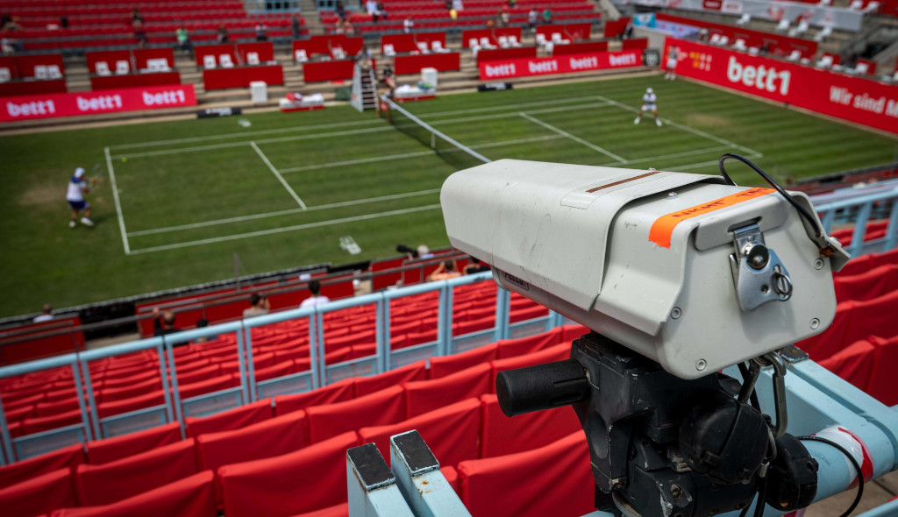
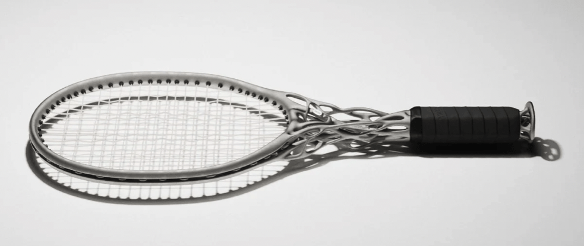
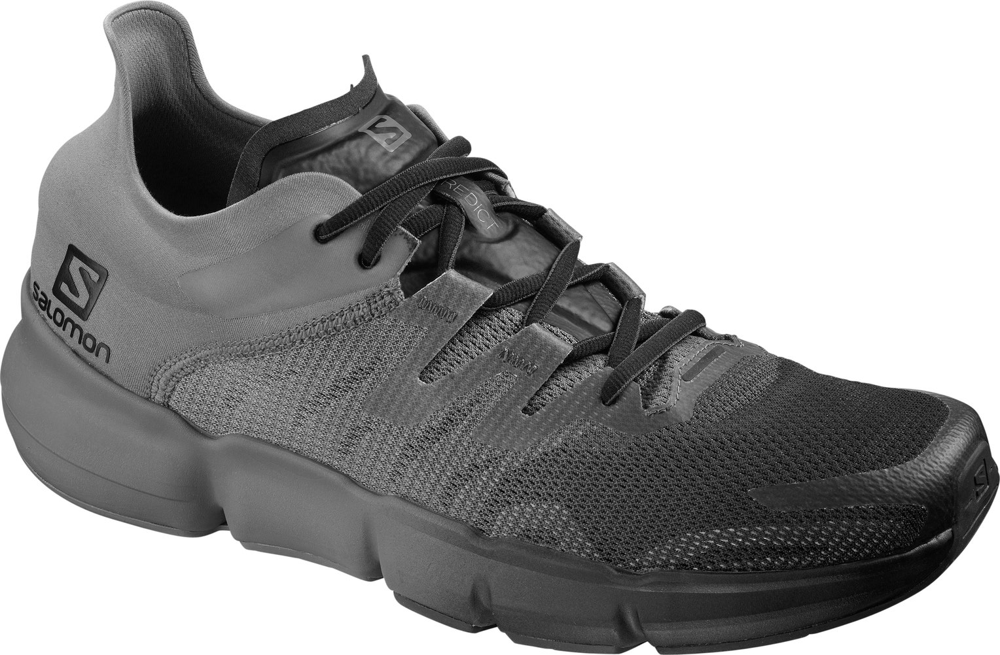
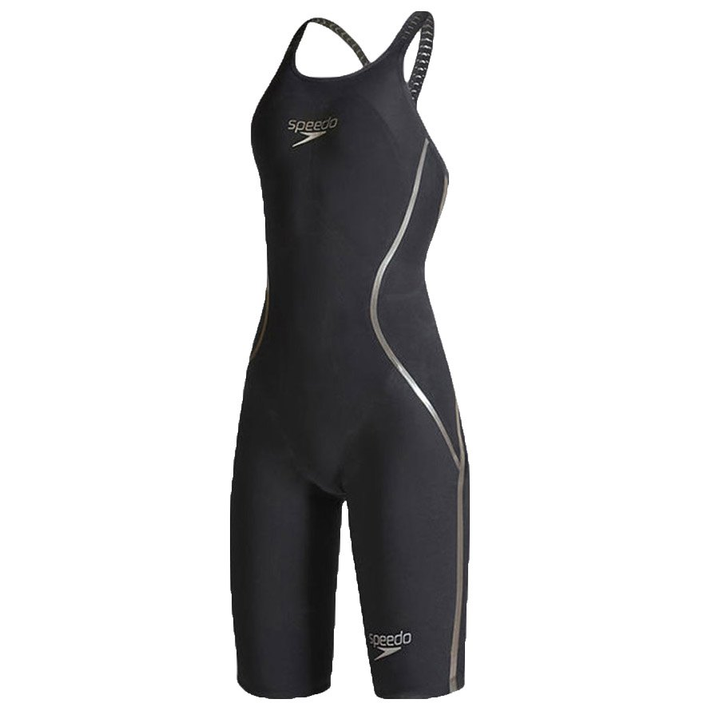

VAR - Fair Football

Video assistant referee (VAR) technology is the real game changer in the football world. VAR is implemented with a very high precision camera with the ability to slow-motion to oversee the ball movement precisely. VAR has been implemented in over 100 competitions worldwide. Throughout a match, the video assistant referee team constantly checks for clear and obvious errors related to these four match-changing situations. The VAR team communicates with the referee only for clear and obvious mistakes or serious missed incidents.
What problem does this innovation solve?
Football fans all around the world are tired to fight and debate whether it is an offside or penalty. Unfairness often causes tension during matches. There is a lot of responsibility placed on a football match referee. A wrong call, can completely change the outcome of a match. It is hard as a human with limited vision to precisely follow the movement of the ball and real time player movement. Therefore, VAR is created to assist referee by showing the slow motion movement of the ball or player. Therefore, it is easier for referee to make a judgement during the match.
How to use this innovation?
The video assistant referee team has access to 42 broadcast cameras, eight of which are super slow motion and four of which are ultra slow motion. Slow-motion replays are mainly used for factual situations, for example, to identify the point of contact of a physical offence or the position of an offence. Normal-speed replays are used for subjective judgements, for example, to determine the intensity of an offence or whether or not a handball was punishable. In addition to the broadcast cameras, the VAR team has access to the camera feeds used by semi-automated offside technology.
The VAR team has access to all FIFA host broadcaster camera feeds.
Who is using this innovation?
VAR is not only implemented in football. Any other sport that requires precision to judge the end result of the match can benefit from this technology. In football world, VAR has been approved as the main technology to use in FIFA world matches since 2017. Not only that, All major continental club competitions utilize VAR, including the UEFA Champions League and Women's Champions League, Europa League, Copa Libertadores and many more.
Hawkeye For Tennis

How does it work?
Hawkeye has been the game changer in Tennis world and save so many fans from a fight! Just like VAR, Hawkeye technology is created to monitor closely the movement of the tennis Ball. Hawkeye is built from a collaborative network of 10 cameras surrounding the court that capture 60 high-resolution images per second. At least five cameras are installed to cover every movement of the ball. Add to that, a centralized computer system rapidly processes the images, triangulates the ball's position, and calculates a flight path. Hawk-Eye collects data for every shot taken in the match.
ALL LABS: The Alien Tennis Racquets

What is it?
Hands down this will be the most unique tennis racquet you will ever see in your entire lifetime. This racquet is designed by AI called Hìtëkw and unlike any other racquet with a boring straight handle, this racquet has a tree branch imitation stick. Unlike the traditional racquet that is made by molding or casting, this design has to be manufactured with 3D printing technology. Despite its shape this racquet is weightless.
Salomon RA: Runner Friendly Shoes

What is it?
What is different about this new Salomon shoe model Predict RA from other running shoes is the aim to reduce strain on the knee for runner. This shoe is designed to match the joint in each foot. While most shoes have a bottom unit in which the heel and forefoot are decoupled to deliver flexibility for the foot from front to back, the Predict RA has grooves along the top and bottom of the midsole to align with the bone and joint patterns of the foot.
Runeasi: Athlete And AI

What is it?
Runeasi is introducing sports innovation from the view of physiotherapists. On the first method, runeasi measures the impact of an obstacle on the runner’s body and detect how runner's body responds. Secondly, runeasi will also perform biomechanical assessments on athlete's body in real-time or remotely. Thirdly, runeasi with the help of AI will provide insight based on the analysis and then provides personalized training recommendations that will show in which aspect the athlete needs an improvement or weakness point of the athlete.
Shark skin swimwear (Speedo LZR Racer)

How it works?
This swimsuit is better than the common swimsuit because its adapting to the structure of the shark skin. The material for Speedo ZR Pulse is made of very fine microfibers of nylon and spandex with a high-density weave. It is extremely light in terms of weight and repellent to water. With all of those material properties, the material is also highly stretchable. This material presses firmly against the swimmer body which will then create a compression needed to streamline the swimmer body to reduce form drag.